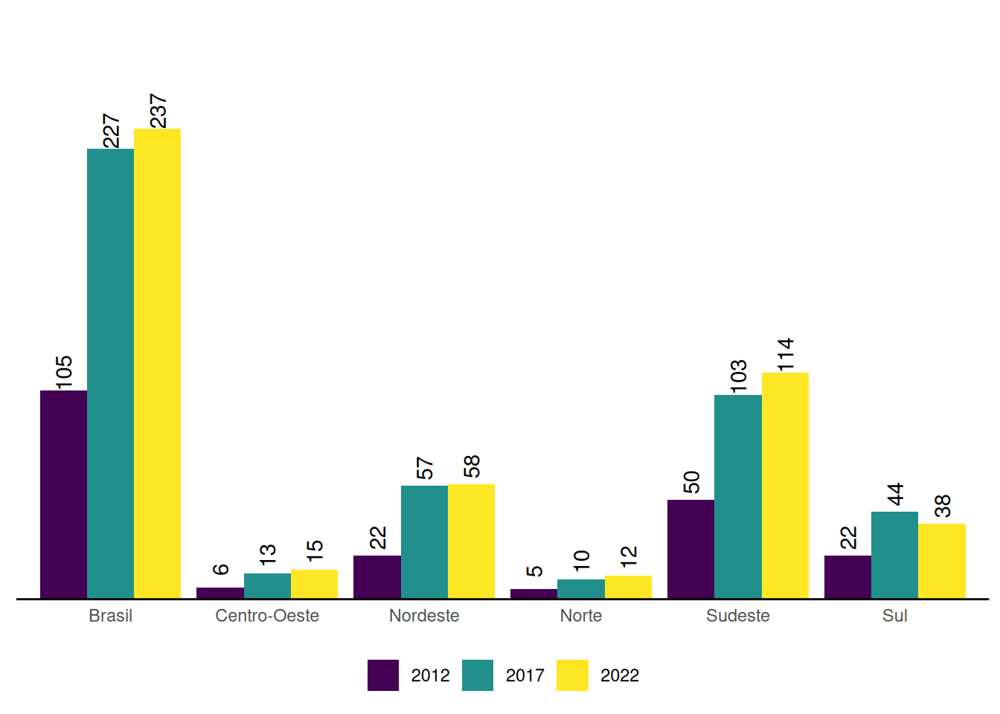
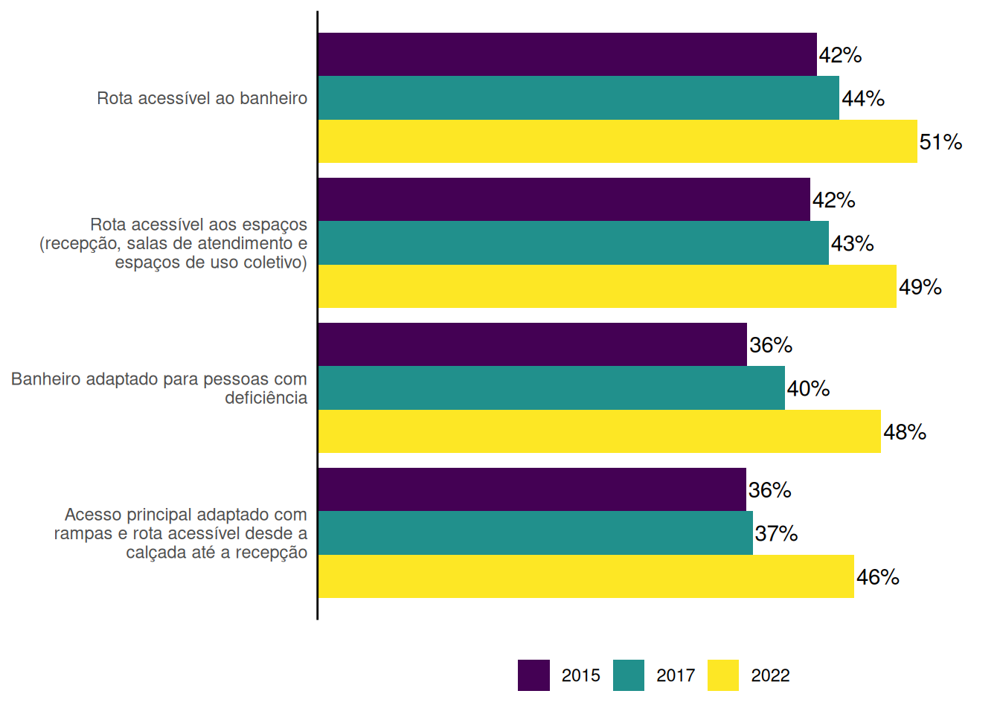
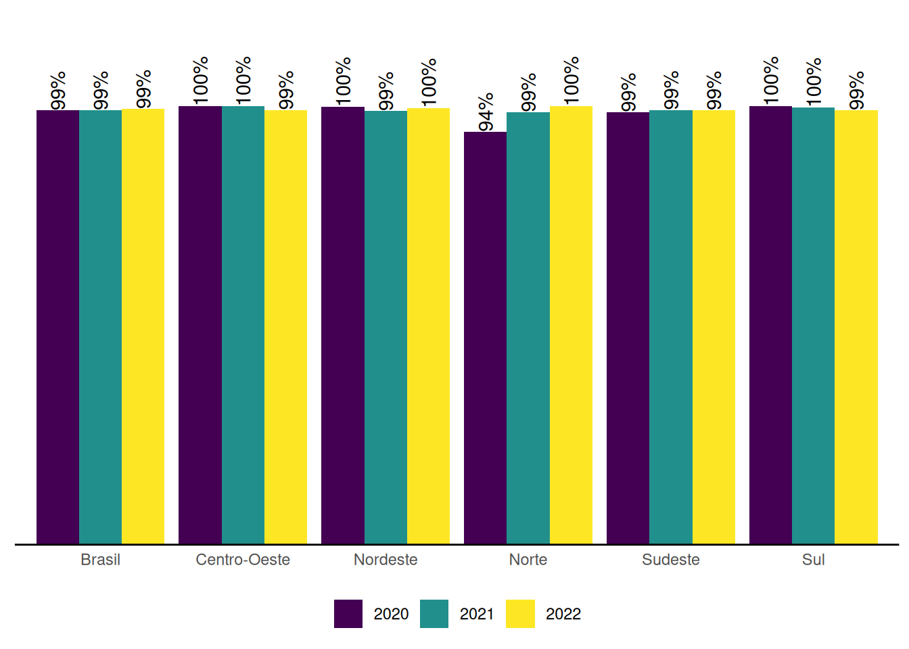

3 Unidades do SUAS
Essa seção apresenta informações sobre as unidades físicas do SUAS e sua evolução ao longo do tempo. Esse item contempla as seguintes informações: a) quantidade de unidades administrativas da rede socioassistencial, b) informações sobre acessibilidade, c) situação do imovél e d) disponibilidade de equipamentos, como computador com acesso à internet.
3.1 Centros de Referência de Assistência Social (CRAS)
Os Centros de Referência de Assistência Social (CRAS) são definidos pelo artigo 6º-C da Lei Orgânica de Assistência Social (LOAS) como unidades públicas municipais destinadas à prestação de serviços, programas de projetos da proteção social básica às famílias, devendo se localizar em áreas com maiores índices de vulnerabilidade e risco social.
No Censo SUAS de 2022 foram identificados 8.557 CRAS, em 5.535 municípios brasileiros, o que indica que há pelo menos um CRAS em 99,4% dos municípios brasileiros.
O quantitativo de CRAS dobrou entre 2007 e 2022, passando de 4.195 unidades para 8.557. O Gráfico 3.1 apresenta a evolução da quantidade de CRAS por grandes regiões de desenvolvimento.
A Expansão em todo território nacional do número de CRAS evidencia a consolidação de uma referência de unidades públicas de Assistência Social em todo território nacional. De acordo com os dados, 99,37% municípios possuem CRAS, ou seja, apenas 34 municípios no Brasil não dispõem desta unidade pública1.
Ao observar o número de CRAS por municípios, levando-se em conta o porte populacional, verifica-se que os 35 municípios do país que não possuem CRAS2 e estão concentrados em municípios de pequeno porte (Gráfico 3.2).
Em relação a concentração da quantidade de CRAS, para os municípios de pequeno porte I e pequeno porte II, dispõem, em sua maioria, de uma unidade de CRAS como referência do território, sendo respectivamente 96% e 69%. Os municípios de médio porte, cerca de 66% possuem de 2 a 3 CRAS. Os municípios de grande porte, o grupo majoritário de unidades são entre 4 a 6 CRAS - 52,5%.

Os dados de CRAS que funcionam com imóvel próprio evoluiu significativamente de 2008 a 2022. Destaca-se que o primeiro ano da série histórica possuia 43,7% CRAS com imóvel próprio (Gráfico 3.3), dado que chega em 2022 com 59,62%. Dados com CRAS que funcionam com imóveis alugados passam por redução de 48,2% para 32,2%.
Observa-se ainda aumento no percentual de CRAS que funcionam em imóveis cedidos: eram 6,8% em 2008, o maior valor da série histórica chega a 9,1%, conforme mostra o Gráfico 3.3.3

Ainda sobre o tema da acessibilidade nas unidades de CRAS, observa-se no Gráfico 3.4 um avanço em todas as condições de acessibilidade nas unidades de CRAS.4 Apesar da evolução, os dados ainda apontam para desafios, sobretudo no que se refere a banheiro adaptado que possui o percentual mais baixo de unidades com essa acessibilidade.

No Gráfico 3.5 foram relacionadas as condições de acessibilidade com a situação do imóvel. Em 2022, verificou-se que as condições de acessibilidade em CRAS localizados em imóveis próprios possuem números significativamente elevados em relação aos imóveis alugados ou cedidos.

Em relação a conectividade, em especial o acesso à internet, o percentual de CRAS com acesso à internet aumentou significativamente desde 2007, chegando no último ano desta série com mais de 99% das unidades com computadores com acesso à internet, conforme o Gráfico 3.6.

Em relação a CRAS com locais para Cadastro Único, o dado abaixo tráz o percentual destas informações e a disposição de equipes para esta finalidade. Nota-se o aumento ao longo dos anos, das unidades de CRAS que possuem Cadastro Único com equipe exclusiva, chegando no Censo SUAS de 2022 com 59% (Gráfico 3.7).
3.2 Centros de Convivência
Os Centros de Convivência, são unidades que executam o Serviço de Convivência e Fortalecimento de Vínculos (SCFV) e compõem a Rede de Proteção Social Básica. Desde 2014 o número de Centros de Convivência no Brasil vem aumentando, passando de 7.882 unidades em 2014 para 8.454 em 2016, acréscimo de 572 unidades. A região Norte tem a menor quantidade de unidades (238 ou 2,8% do total), seguida do Centro-Oeste com 568 Unidades (ou 6,7% do total). A região Sudeste tem o maior número de Centros de Convivência, com 4.035 Unidades (47,7% do total).
Os Centros de Convivência podem ser unidades públicas ou vinculadas a entidades de assistência social inscritas nos Conselhos de Assistência Social do município ou do Distrito Federal. Em 2022, 44% dos Centros de Convivência eram governamentais e 56% das unidades eram não governamentais. 5

3.3 Centro de Referência Especializada de Assistência Social (CREAS)
Os Centros de Referência Especializados de Assistência Social (CREAS) são unidades públicas estatais que ofertam serviços da proteção social especial a pessoas e famílias em situação de risco pessoal ou social e/ou em situação de violação de direitos.
O Censo SUAS 2022 registrou 2.846 CREAS no país: um incremento de 679 novas unidades em relação aos últimos 10 anos. O Gráfico 3.9 sinaliza esta evolução por Regiões do país.
De acordo com os dados do Gráfico 3.10, que mostra o número de CREAS por município levando-se em conta o porte populacional, verifica-se que 54% dos municípios não possuem CREAS. Eles estão concentrados nos municípios de Pequeno Porte I e II, com respectivamente 77% e 5,3% dos municípios que não possuem esta unidade especializada.
Ao observar a série histórica do Gráfico 3.11 é possível perceber que os imóveis próprios vem aumentando ao longo do tempo. Em 2012 eram 27% das unidades e, em 2022 37% destas unidades passam a possuir imóveis prórpios. Ao passo que os imóveis próprios aumentam em 10% pontos percentuais, os imovéis alugados decrescem, computado no Censo SUAS de 2022 com 57% das unidades alugadas.Há também registros de imóveis cedidos no qual ao longo dos anos sinalizam um leve aumento6.

De acordo com os dados do Censo SUAS do período de 2012 a 2022, houve aumento das condições de acessibilidade em vários itens dos CREAS. O Gráfico 3.12 sinaliza que a presença do acesso principal adaptado com rota ascessível aos espaços (recepção, salas de atendimento e espaços de uso coletivo) é a mais presente nas unidades de CREAS, com destaque para 83% no CENSO SUAS de 2022.
O dado proporcional menos presente nas unidades de CREAS é o Banheiro adaptado. Em de 2012, 33% dos CREAS foram identificados com banheiro adaptado. Esse mesmo dado em 2022 chegou a 55% dos CREAS. Destaca-se um crescimento de 22 pontos percentuais em relação ao ano de 2012. 7.

O Gráfico 3.13 mostra a presença de condições de acessibilidade segundo a situação do imóvel. Os dados sinalizam que a acessibilidade é significativamente mais presente em imovéis próprios.

A existência de computadores com acesso à internet é um importante aspecto a ser observado quando se avalia a infraestrutura dos CREAS. No período de 2012 a 2022, observa-se que este item avançou de 89% para 99% dos CREAS que possuem computadores com acesso à internet conforme o Gráfico 3.14.
Esses números avançaram em todas as regiões, em especial, na Região Norte conforme pode ser observado no Gráfico 3.14.

A oferta regionalizada de CREAS é uma estratégia que objetiva garantir a universalização do acesso e integralidade do antendimento da proteção socioassistencia especializada. Ela está prevista através da Resolução CNAS 31/2013. Essa composição é organizada através dos entes estaduais. O Gráfico 3.15 sinaliza a evolução dessa oferta.
3.4 Centro de Referência Especializado para População em Situação de Rua (Centro POP)
Os Centros de Referência Especializados para População em Situação de Rua (Centros POP) são unidades públicas que oferecem atendimento especializado para a população em situação de rua, no âmbito da proteção social especial de média complexidade.
Entre 2012 e 2022 o número de Centros POP cresceu, passando de 105 unidades para 237 no período. O Gráfico 3.16 sinaliza essa evolução na escala de a cada 5 anos por Regiões do Brasil.

Os Centros Pop estão presentes em municípios de grande porte e metrópole, o Gráfico 3.17 sinaliza que 59% dos municípios de grande porte possuem pelo menos uma unidade. Nas metrópoles, 100% possuem unidades de Centro POP, sendo 59% entre duas a três unidades, 24% uma unidade e 18% de 4 a 6 unidades. Esta unidade também está presente em municípios de médio porte, com destaque para 5,9% dos municípios.
Em relação a acessibilidade dos Centro POP, o Gráfico 3.18 relaciona esta adaptação com a situação do imóvel. No geral todas as adaptações de acessibilidade são superiores ao serem relacionadas com os imóveis alugados. Em relação aos imóveis cedidos, a adaptação de banheiro se sobressai em relação as demais situações dos imóveis.

Em 2016,95% dos Centros Pop destacam computador com acesso à internet em 2022. O Gráfico 3.19 referencia essa evolução por Regiões do Brasil, as regiões Centro Oeste e Sul possuem 100% das unidades com acesso à internet e a região Norte com maior desafio de acesso, com 75% das unidades de Centro POP com acesso à internet.
3.5 Centro-Dia
Os Centros Dia são unidades públicas especializadas para atender pessoas com deficiência e suas famílias. Ela está inserida no âmbito da proteção social especial de média complexidade. No ano de 2015 identifica-se no Brasil 1.340 unidades. Em 2022 há um crescimento de 40,7% destas unidades, conforme pode ser observada no Gráfico 3.20.
Em relação a natureza destas unidades, o Gráfico 3.21 sinaliza que estas unidades são majoritariamente referenciadas pelas Organizações da Sociedade Civil (OSCs). Das unidades destacadas no Censo SUAS 2022, 92,8% são ofertadas por OSCs.8
Em relação a acessibilidade destas unidades, o banheiro acessivel é a adaptação mais presentes nestas unidades chegando nos registros do Censo SUAS de 2022 com 73%. Como trata-se de unidades especializadas para atenção a pessoas com deficiência, esse item é de fundamental importância para assegurar acolhida e segurança a este público e suas famílias. O Gráfico 3.22 sinaliza os locais e composição de acessibilidade, estes dados sinalizam um desafio para garantir as condições físicas de acesso ao público de pessoas com deficiência nas unidades de Centro-Dia.

Além disto, há outras adaptações importantes nestas unidades, como tecnologias assistidas, suportes com materiais em braile, profissionais com conhecimento em Libras entre outros destacados no Gráfico 3.23.
3.6 Unidades de Alta Complexidade
As Unidades de Acolhimento tem o objetivo de ofertar serviços de Proteção Social Especial de Alta Complexidade, com atenção a pessoas e/ou famílias com vínculos rompidos ou fragilizados, ou que estejam em situação de abandono, ameaça ou violação de direitos, de forma a garantir sua proteção integral.
No que se refere a quantidade total destas unidades de acolhimento por porte populacional, destaca-se que há concentração nos municípios com porte populacional maiores. Todas as metrópoles possuem registro de mais de 10 unidades. O Gráfico 3.24 também sinaliza que 74% dos municípios de pequeno porte I não dispõem de serviços de alta complexidade.
Para os municípios menores a Resolução 31/2013 do CNAS sinaliza sobre a oferta regionalizada e a expansão qualificada dos serviços de Alta Complexidade para Criança e Adolescentes. O orgão gestor estadual é responsável por esta organização.

A maioria das Unidades de Acolhimento são executadas por Organizações da Sociedade Cívil (Osc). Esse percentual teve uma redução entre 2012 e 2022. Em 2012 estes dados sinalizam percentual de 66,4% das unidades de acolhimento com execução de OSC, registrando em 2022 63,4% conforme o Gráfico 3.25.
No que se refere às condições de acessibilidade, é possível notar melhorias no percentual dos quatro quesitos de acessibilidade. A adaptação mais observada é a rota acessível ao banheiro, presente em 50,9% das Unidades, e a menos observada é o acesso principal adaptado com rampas e rota acessível desde a calçada até o interior da unidade, presentes em 49,2% das Unidades. O banheiro adaptado para pessoas com deficiência e/ou mobilidade reduzida, presente em 47,9% das unidades em 2022 e no que se refere ao acesso principal adaptado com rampas e e rota acessivel para o Censo SUAS 2022 observa-se presente em 45,6% das unidades conforme o Gráfico 3.26.

Em relação ao acesso à internet, observa-se uma evolução nos últimos 10 anos. Em 2012 62,2% das unidades possuem acesso à internet, o Censo SUAS de 2022 destaca que 100% dos computadores das unidades possuem acesso à internet conforme o Gráfico 3.27.
3.7 Unidades do Cadastro Único
Quanto a presença das unidades do Cadastro Único, os dados do Censo SUAS 2022 sinaliza 2.892 unidades de postos do Cadastro Único conforme pode ser observado através do Gráfico 3.28.

O Gráfico 3.29 mostra o local onde estão estas unidades. A maioria delas, 61%, encontra-se na secretaria de Assistência Social. A segunda proporção são postos exclusivos, com destaque para algumas unidades presentes em escolas, conselhos e OSCS.
A acessibilidade nas unidades de Cadastro Único possuem leve avanço nos últimos anos, com execeção da rota acessível aos principais espaços, os demais itens de acessibilidade avançaram conforme pode ser observado através do Gráfico 3.30.

Em relação aos espaços de acessibilidade comparada a situação do imóvel, destaca-se que os postos do Cadastro Único próprios ou cedidos, possuem significativamente mais acessibilidade que os imóveis alugados (Gráfico 3.31).

Em relação a computadores com acesso à internet, os dados do Censo SUAS 2022 sinaliza que 99% das unidades dispõe de equipamentos com esta estrutura, conforme pode ser observado no Gráfico 3.32.

3.8 Considerações Finais
O Censo SUAS 2022 identificou a oferta de 30.824 unidades da Assistência Social. São 8.557 CRAS, 7.837 Centro de Convivência, 2.846 CREAS, 33 CREAS Regionais, 237 Centro POP, 1.886 Centro-Dia, 2.892 unidades exclusivas de Cadastro Único e 6.536 unidades de acolhimento institucional (Crianças e adolescentes,Pessoas Idosas, Adultos e Famílias, Pessoas com deficiência, Mulheres em situação de Violência Doméstica, Jovens egressos serviços de acolhimento).Os dados mostram forte presença no território nacional com destaque para crescimentonos últimos 10 anos.
No âmbito da Proteção Básica houve um crescimento de 11% nos últimos 10 anos. Em relação a acessibilidade há avanços, sobretudo os que possuem imóvel próprio que chegam a ter 28 pontos percentuais de diferença em relação aos imóveis alugados.
No que se refere a Proteção Social Especial, nos CREAS, observa-se um crescimento de 31% destas unidades nos últimos 10 anos. As condições de acessibilidade dos CREAS também avança, sobretudo os que possuem imóvel próprio com 28,4% de diferença em relação aos imovéis alugados. Os Centros Pop crescem 126% ao longo dos últimos 10 anos, assim como acessibilidade também, sobretudo para os imovéis próprios.Em relação as Unidades de Acolhimento Institucional 45% delas são da modalidade de Criança e Adolescente, em seguida para públicos de Pessoas Idosas e Adultos e Famílias. Os centros dia destacam evolução de 41%, bem como nas condições de acessibilidade. Para essa modalidade de oferta, 93% são através de OCS (Organizações da sociedade Civil).
A oferta do Cadastro Único nas unidades, em especial de CRAS avançou 3,8 pontos percentuais nos últis 10 anos, esse dado se torna significativamente maior quando relacionado com equipe exclusiva para esta finalidade que avança 25 pontos percentuais neste mesmo período. Por fim, destaca-se a inclusão digital sob a ótica do acesso à internet como algo praticamente universalizado nas unidades do SUAS.
estas informações são referentes ao preenchimento do Censo SUAS, é possível que no determinado período esta unidade pública não tenha preenchido o forumulário↩︎
é possível também que alguns deles não tenham respondido ao Censo SUAS↩︎
Para os anos de 2018 e 2019 esse dado não foi coletado no Censo SUAS↩︎
foram considerados acesso adaptado, os imóveis que informam possuir acessibilidade, de acordo com a norma ABNT ou não↩︎
os dados de 2016 não foi possível de ser coletato devido a dificuldades de leitura da base de dados↩︎
Para os anos de 2018 e 2019 esse dado não foi computado no Censo SUAS↩︎
foram considerados acesso adptado os imóveis que informam possuir acessibilidade, de acordo com a norma ABNT ou não↩︎
não foi identificado essa pergunta para o ano de 2017 e para o ano de 2022 não foi possível gerar a informação a partir do banco de dados disponível↩︎